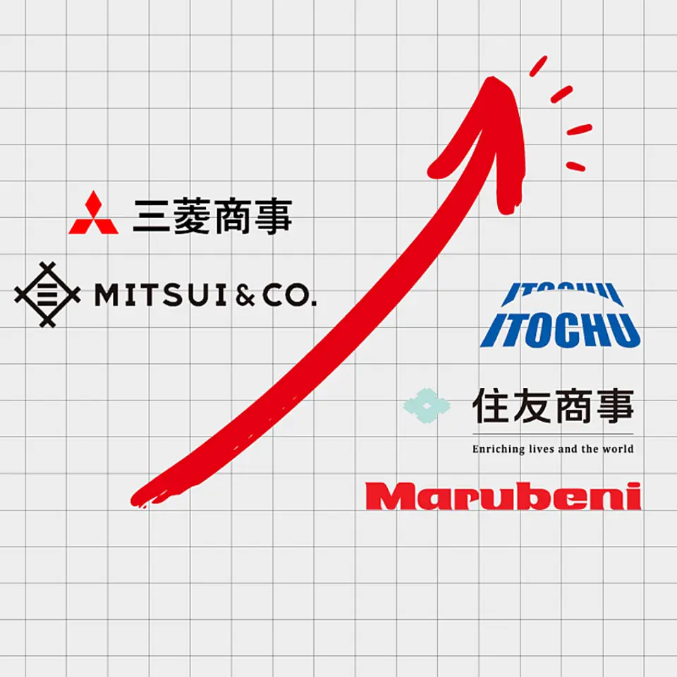
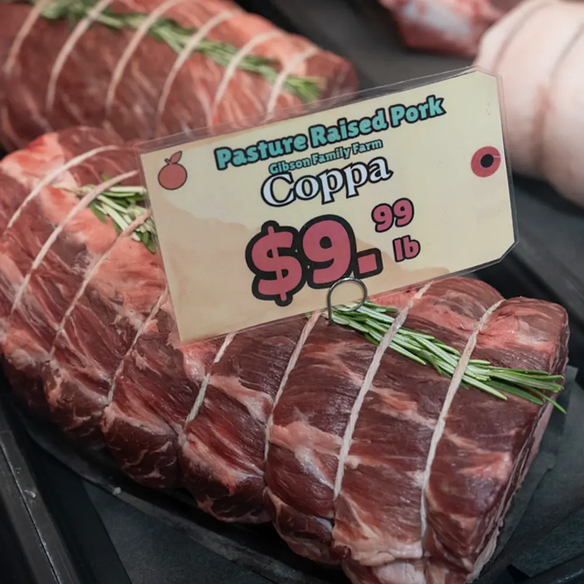
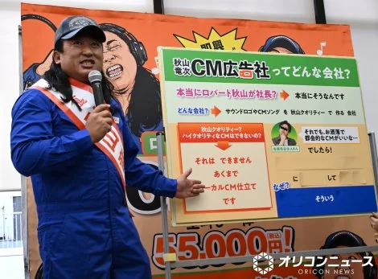

【驚異】「SaaS全滅」時代に、唯一伸びまくる企業があった
発行日時：2026-11-09 05:30:00 JST
NewsPicks原文を読む
あなたに関係ありそうな理由
AIが企業のファイルを使う際、情報管理と業務効率の両方を考える材料になります。
概要
企業向けのクラウドサービスがAIの進化で厳しい競争にさらされる中、ファイル管理を手がける米Boxの株価が伸びている。NewsPicksの森川潤ニューヨーク支局長は、同社が企業内の文書や画像などをAIエージェントに活用させる戦略を取材した。記事によると、Boxの株価は年初来で約40％上昇し、9月には2015年の上場以来の最高値を付けた。
Boxは2005年に消費者向けサービスとして創業し、2009年ごろから企業向けに軸足を移した。現在は特に大企業のファイル管理を手がけ、セキュリティやガバナンスを強みにしている。顧客が保存するのは契約書、設計図、法務資料、プレスリリースなど、形式の異なるファイルだ。
記事の中心にあるのは、こうした「非構造化データ」の価値である。表のように項目がそろったデータとは異なり、文書や画像には情報が自由な形で含まれる。Box側は、企業内データの大部分をこうした情報が占めると説明する。AIエージェントが調査や判断を行うには、その作業に関係する情報にアクセスできることが欠かせない、というのが同社の考えだ。
創業者で最高経営責任者のアーロン・レヴィ氏は、企業内で現在の人員の100倍ものエージェントがデータやシステムを使う未来を語る。これは同氏の見通しであり、実際にその数や生産性が実現したという意味ではない。Box Japanの佐藤範之社長は、既存のファイル管理でアクセス権を管理していることが、AI活用の安心感にもつながると説明した。
日本市場の比重も大きい。記事によれば、Boxの売上高のうち日本は3割近くを占める。同社は各産業の大企業に焦点を当て、ファイルサーバーを置き換える提案を進めてきた。レヴィ氏は、日本企業では責任者が導入を決めた後、全社へ広がる速さに可能性があると述べている。ただし、これは取材に応じた経営者の見方だ。
記事は、Boxの売上高の伸び率だけを見れば、他のSaaS企業に見劣りする場合もあると指摘する。株価の上昇と現在の売上成長を同じものと考えることはできない。NewsPicksのコメントで比屋根一雄氏は、モデルへの中立性や権限管理に注目しつつ、Microsoftの既存サービスも強力だと述べた。早船明夫氏は、情報流出の防止が同社にとって生命線になると指摘している。AIが使いやすいことと、誰がどの情報に触れられるかを管理することが、今後の焦点になる。
仕事や会話で使える一言
AIが使うファイルこそ、権限の管理が大切ですね。
【真相解説】五大商社が今年、「過去最高益」を連発している
発行日時：2026-11-09 05:30:02 JST
NewsPicks原文を読む

あなたに関係ありそうな理由
投資先や日本企業の利益を、資源価格と事業の中身に分けて見られます。
概要
五大商社が2026年度の通期純利益見通しを相次いで引き上げている。NewsPicksは各社の中間決算を基に、何が利益を押し上げているのかを解説した。三菱商事は1兆2000億円、三井物産は1兆500億円を見込み、2社が1兆円を超える予想だ。伊藤忠商事は9500億円を据え置き、住友商事は6700億円、丸紅は6300億円へ引き上げた。これらは通期の予想であり、確定した利益ではない。
丸紅の上半期純利益は3380億円で、前年同期より11％増えた。銅やアルミなどの市況上昇に加え、化学品の取引などが利益を支えた。通期予想を当初より500億円引き上げ、年間配当も増やす方針を示した。資源価格だけでなく、既存事業の改善や、航空機、北米のモビリティ、食料などの事業も収益拡大に寄与している。
住友商事は通期純利益を6300億円から6700億円に修正した。中東での自動車販売は戦争の影響を受けたものの、資源や航空機リースなどが支えた。上野真吾社長は、銅などの上流の利益だけでなく、アルミの加工や取引といった中下流の事業も伸びていると説明した。価格差や市況の変化を捉える取引も利益の柱になっている。
伊藤忠は通期予想を9500億円に据え置いた。上半期には北米の電力需要や、出資比率を引き上げた日立建機が機械分野の利益に貢献した。石井敬太社長は、上半期の調達需要が追い風となった一方、下半期の先行きは不透明だと説明する。原料炭の生産回復の遅れや北米の建材事業など、弱い部分もあるため、上方修正には至らなかったという。
三井物産は通期予想を9200億円から1兆500億円へ増額した。化学品などの取引に加え、ブラジルの旅客鉄道や米国の不動産会社に関する資産入れ替えの利益も寄与した。三菱商事は1兆1000億円から1兆2000億円に引き上げ、1兆円の自己株取得も発表。LNGカナダの生産開始と市況上昇がエネルギー分野を押し上げた。
共通するのは、資源価格の上昇だけではない。商社は調達、物流、販売、投資先を組み合わせ、需給の変化に対応する事業を持つ。一方、価格や為替の追い風、一時的な資産売却益も含まれるため、利益の中身を見極めたい。NewsPicksでは永濱利廣氏が世界情勢の変化と商社の事業モデルに言及し、清水勝彦氏は投資会社との比較を提案した。
仕事や会話で使える一言
最高益の予想も、利益の中身を見ておきたいですね。
【欲望】痩せたい米国人の「牛肉を好きすぎる」問題
発行日時：2026-11-09 05:30:01 JST
NewsPicks原文を読む

あなたに関係ありそうな理由
食料価格と消費行動が、供給や食文化にどう左右されるかを知る手掛かりになります。
概要
米国で牛肉の価格が上がっている。それでも消費者の需要は根強い。ニューヨーク・タイムズの記事は、タンパク質を重視する食生活の変化を背景に、牛肉、鶏肉、豚肉、魚介類などの価格と消費量を比べた。何を選ぶかには、値段だけでなく、食文化や所得も関わっている。
記事によると、米国では牛の供給頭数が数十年ぶりの低水準にある。そこへ需要の高まりが重なり、ステーキ肉は1ポンド当たり13ドル近く、牛ひき肉は7ドル近くになった。ステーキ肉の価格は過去1年で3.5％、2年で16.6％上昇したという。食料品高騰は秋の選挙戦でも話題になった。
それでも牛肉の消費は減っていない。記事が示す2026年の1人当たり消費量は平均59ポンドの見通しで、底を打った2014年の54ポンドを上回る。カンザス州立大学の畜産経済の専門家グリン・トンサー氏は、富裕層には上質な牛肉により多く支払う余裕と意欲があると説明する。タンパク質を求める人々にとって、牛肉は値上がりしても選ばれる食材の一つだ。
ただし、動物性タンパク質で最も安く、多く消費されるのは鶏肉である。記事では丸鶏が1ポンド約2ドル、骨なしの鶏むね肉はその約2倍と紹介されている。鶏肉の1人当たり消費量は2026年に108ポンドになる予測だ。鶏は出荷までの期間が牛より短く、需給の変化に比較的速く対応できる点も記事は挙げる。
一方、豚肉は牛肉より安いにもかかわらず、1人当たり消費量が40年ほど年間約50ポンドでほぼ横ばいだ。魚介類は1960年代以降に消費量がほぼ倍増し、2023年には1人当たり20ポンド近くに達した。増加は主に生鮮・冷凍品によるという。米国で食べられる水産物の約8割は輸入品であり、記事は関税や貿易の混乱による価格への影響にも触れる。
植物性の供給源では、米国は世界の大豆の約3分の1を生産する一方、大豆そのものを食べる量は1人年間2ポンド未満とされる。多くは油や家畜飼料などに使われる。代替肉の技術は進んだが、記事は消費が広く定着したわけではないと伝える。
NewsPicksのコメントでKato Jun氏は、飼料効率や生育期間と価格の関係に着目した。西村友作氏は、中国では豚肉が中心であると述べ、国によって食文化が異なると指摘する。数字は記事時点の推計や過去の統計を含む。健康に良い食材を一つ選ぶ話ではなく、価格、供給、好みが食卓にどう表れるかを見る記事だ。
仕事や会話で使える一言
値段だけでは食べ物の好みは決まりませんね。
秋山竜次、『秋山竜次CM広告社』の社長に「マジです」 全国の家族経営の会社・個人店などのサウンドロゴを叫び、CMソングを制作へ
発行日時：2026-11-09 14:00:00 JST
NewsPicks原文を読む

あなたに関係ありそうな理由
地域や家族経営の事業を短い音と言葉で伝える企画に触れられます。
概要
お笑いトリオ、ロバートの秋山竜次さんが、家族経営の会社や個人店などを対象にした広告会社「秋山竜次CM広告社」を立ち上げた。ORICON NEWSによると、11月9日に設立記者発表会を開き、自ら店名や商品名を叫ぶサウンドロゴや、CMソングを制作する企画を発表した。
秋山さんは子どものころからテレビで流れるローカルCMが好きだったと話す。看板を見るだけで、それらしい節を付けて歌えるようになった経験を背景に、地域の事業者を応援する企画として形にしたという。発表会では会社の広告を配りながら登場し、実際の事業であることを強調した。
用意されたのは三つのコースだ。一つ目の「即興サウンドロゴ」は、店名や商品名を秋山さんが即興で叫ぶもので、長さは10秒以内。料金は5万5000円で、音源データのほか、10分間のループ版も納品される。二つ目の「CMソング」は30〜40秒で、店名や商品名をリズミカルに歌い上げる。料金は33万円だ。どちらも音源データをメールとCD-Rの郵送で受け取る。
三つ目は、秋山さん自身が企画し出演する30〜60秒のCM映像だ。料金はスケジュールやひらめきなどに応じて変わるとされ、今後、一回当たり3〜4社を募集する予定だ。映像コースは、今回始まった第1期の募集対象には含まれていない。音声の二つのコースと同時に応募できるわけではない点に注意したい。
即興サウンドロゴとCMソングの第1期募集は11月9日から12月13日までで、対象者は抽選で決まる。応募できるのは、事業の広告宣伝に使う非上場企業、個人店、個人事業主だ。上場企業とその子会社やグループ会社は対象外とされている。全国の小さな事業者に向けた企画だが、申し込めば必ず制作される仕組みではない。
地元で繰り返し流れる短い音楽や店名の呼び声は、商品や店を思い出すきっかけになる。今回の企画は、そのサウンドロゴやCM曲を、地域の事業者が依頼できる形にしたものだ。どの言葉を使うか、どんな印象を残したいかを考えることは、自分たちの事業を短く伝える練習にもなる。
NewsPicksのコメントでは篠田尚子氏が、秋山さんの作詞・作曲の力に注目した。後藤悠一氏は、周囲の人を巻き込みながら仕事を広げる姿に触れている。いずれも記事への感想だ。今後どのような事業者が選ばれ、個々の店の特徴がどんな音や言葉になるのかが楽しみな取り組みである。
仕事や会話で使える一言
店の名前を短い音で伝える工夫は面白いですね。
ドコモ《1カ月足らずで"トラブル連発"》の大失態…社長が設備投資増額を意気込んだ矢先の｢14時間続いた通信障害｣
発行日時：2026-11-09 05:45:00 JST
NewsPicks原文を読む

あなたに関係ありそうな理由
日常の通信が止まったときの影響と、復旧の課題を理解できます。
概要
NTTドコモの「5G SA」契約者に、11月5日から翌6日にかけて約14時間の通信障害が起きた。東洋経済オンラインによると、全国の最大約158.7万人で通話やデータ通信、SMSが使えない、またはつながりにくい状態になった。緊急通報や緊急速報メール、格安SIMは影響の対象外だったと、ドコモは後に説明している。
5Gと表示されても、利用者全員が同じ方式ではない。一般的な5Gには、基地局は5Gでも、通信のつなぎ先を制御する中核設備には4Gの仕組みを使う方式がある。5G SAは、この中核部分も5G専用にした方式だ。ドコモで使うには申し込みに加え、対応する端末とSIMが必要で、利用できる地域も限られる。
障害は5日午前11時18分ごろに始まった。当初、ドコモの発表では影響範囲がはっきりしておらず、格安SIMも対象に含めていたが、後に訂正した。午後2時ごろには5G SA契約者に対象を絞り、端末の設定で4Gを選び、再起動または機内モードの切り替えを行う回避策を案内した。復旧は6日午前1時20分だった。
記事によると、きっかけは5G SA用の中核設備で行っていた保守作業だった。契約者を収容する交換機でメモリー異常が発生し、別の装置にも不具合があったという。接続先を探し直す処理や端末からの再送が重なり、中核設備が混雑した。ドコモは作業手順に問題はなく、不正アクセスやサイバー攻撃の形跡もないと説明している。
復旧が長引いた背景には、別の作業が同じ時間帯に進んでいたことがある。ドコモはまず加入者データベースの更新を疑い、確認後に交換機の異常へ原因を絞った。異常が稼働中の設備で起きていたため、対処を慎重に進めたことも時間を要した理由だという。
障害の前日、同社は設備投資計画を430億円増やし、9000億円にすると発表していた。社長は5G SA設備の増強を理由の一つに挙げている。また、障害と同じ日に顧客情報への不正アクセスも公表したが、これは通信障害とは別の問題だ。二つを同じ原因とみなしてはいけない。
ドコモは関連する工事を同時に進めないなど、管理を見直す方針を示した。NewsPicksでは高橋義仁氏が、障害を減らす事業者の責任に触れた上で、通信を途切れさせたくない利用者や企業には、異なる事業者の回線を併用する備えも必要だと述べた。普及が進むほど影響範囲も広がるだけに、工事管理と復旧手順の改善が問われる。
仕事や会話で使える一言
通信障害は、対象範囲と復旧までの時間を確かめたいですね。